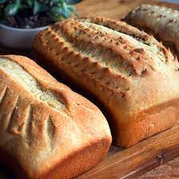

Simple Whole Wheat Bread

A great-tasting whole wheat bread recipe, easy to make with simple ingredients.
Ingredients
- 3 cups warm water (110 degrees F/45 degrees C)
- 2 (.25 ounce) packages active dry yeast
- ⅔ cup honey, divide
- 5 cups bread flour
- 5 tablespoons butter, melted, divided
- 1 tablespoon salt
- 4 cups whole wheat flour, or more as needed
Directions
- Mix warm water, yeast, and 1/3 cup honey in a large bowl to dissolve. Add 5 cups bread flour, and stir to combine. Let sit for 30 minutes, or until big and bubbly.
- Mix in 3 tablespoons melted butter, remaining 1/3 cup honey, and salt. Stir in 2 cups whole wheat flour. Transfer dough to a floured work surface and gradually knead in remaining 2 cups whole wheat flour. Knead until dough starts to pull away from the work surface, adding more whole wheat flour if necessary; dough should be a bit tacky to the touch, but not too sticky.
- Place in a greased bowl, turning once to coat the surface of the dough. Cover with a dish towel and let rise in a warm place until doubled, 45 minutes to 1 hour.
- Grease three 9x5-inch loaf pans. Punch down the dough, and divide it into 3 loaves. Place in the prepared loaf pans, and allow to rise until dough has topped the pans by one inch, another 45 minutes to 1 hour.
- Meanwhile, preheat the oven to 350 degrees F (175 degrees C).
- Bake the risen loaves in the preheated oven until golden brown for 25 to 30 minutes, do not overbake.
- Lightly brush the tops of the loaves with remaining 2 tablespoons melted butter when done to prevent crust from getting hard. Cool completely.